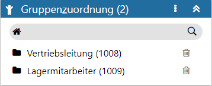
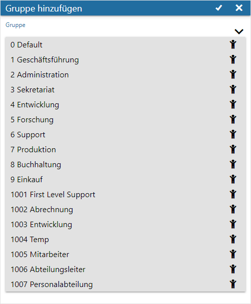

Definitionsbereich - Gruppenzuordnung
Mit Hilfe dieses Bereichs kann angegeben werden, welche System- bzw. Personengruppen für den jeweiligen Schritt (Workflowstatus) zuständig sind.
Hinweis
Auf diese Zuordnung bzw. Zuständigkeit kann im WinLine LIST bei CRM-Listen (Typ "16 - CRM Workflow", "17 - CRM Aktionen" oder "18 - CRM Workflow und Aktionen") mit Hilfe der Option "Einträge die den Benutzer betreffen" (Bereich "CRM-Selektion") zugegriffen / selektiert werden.

Ø Kopfzeile
In der Kopfzeile des Bereichs wird neben der Bezeichnung "Gruppenzuordnung" auch die Anzahl der aktuell zugeordneten Gruppen angezeigt.
Achtung
Handelt es sich um einen Workflow-, End- oder Nebenschritt, welcher von einem Musterschritt abgeleitet wurde, so wird diese Verbindung ebenfalls in der Kopfzeile dargestellt.
Ø Menü
Durch Anwahl des Menüs werden, abhängig vom aktuell gewählten Workflow-Objekt, weitere Funktionen zur Verfügung gestellt:
ü Entsperren / Sperren
Handelt es
sich um einen Workflow-, End- oder Nebenschritt welcher von einem Musterschritt
abgeleitet wurde, so kann hier definiert werden, ob die Gruppen fix vom
Musterschritt kommen oder editierbar sein sollen.
ü Maximieren / Minimieren
Bei
einem Maximieren wird die Gruppenzuordnung als einziger Bereich in der
Definition angezeigt, bzw. bei einem Minimieren wieder alle Bereiche in der
Definition.
Hinweis
Über die Tastenkombination ALT + H kann der Bereich direkt maximiert bzw. minimiert werden.
ü Neu
Mit Hilfe dieser Auswahl
können neue Gruppen hinzugefügt werden. Hierfür öffnet sich zunächst das Fenster
"Berechtigungen hinzufügen", in welchem alle noch nicht zugeordneten Gruppen
aufgeführt werden.

Nach Auswahl der neuen Gruppen werden diese per Button
 in die Tabelle übernommen.
in die Tabelle übernommen.
Hinweis
Wurde der Bereich "Gruppenzuordnung" maximiert, so können neue Gruppen über die Tastenkombination ALT + N direkt hinzugeführt werden.
ü Übernahme aus Gruppe
Wurden in
der Workflow-Gruppe über den Bereich "Berechtigungen" Gruppen hinterlegt, so
können diese mittels dieses Eintrags übernommen werden.
ü Übernahme aus Startpunkt
Durch
Anwahl dieses Eintrags können die Gruppen aus dem Startschritt in den aktuellen
Schritt übernommen werden. Diese Möglichkeit steht bei Startschritten natürlich
nicht zur Verfügung.
Ø Tabelle
In der Tabelle werden all jene Gruppen aufgeführt, welche für den Schritt zuständig sind.
Ø  Löschen
Löschen
Durch Anwahl dieses Tabellenbuttons wird die Gruppe aus der Tabelle entfernt.